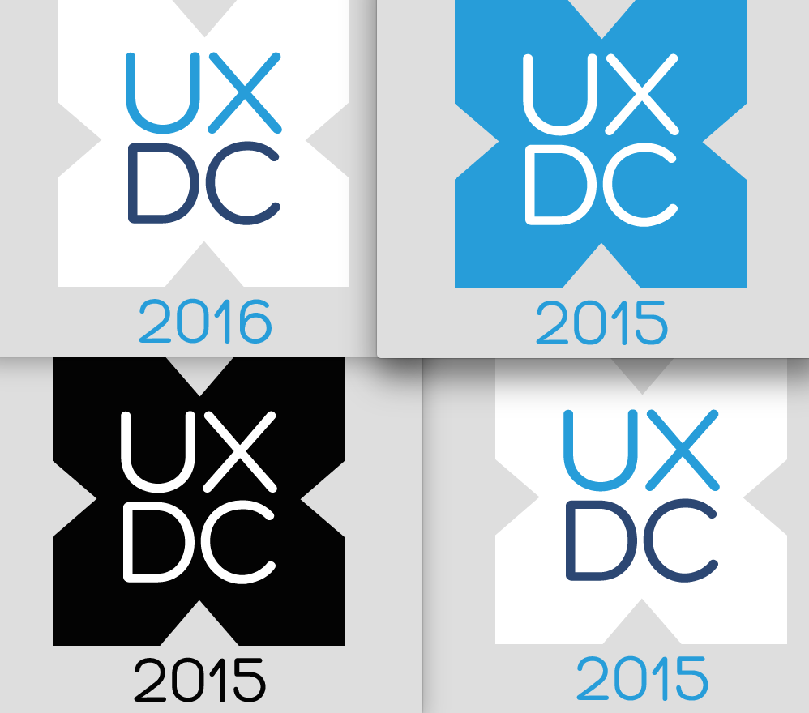
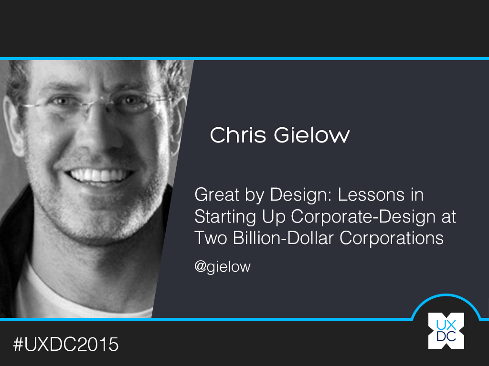
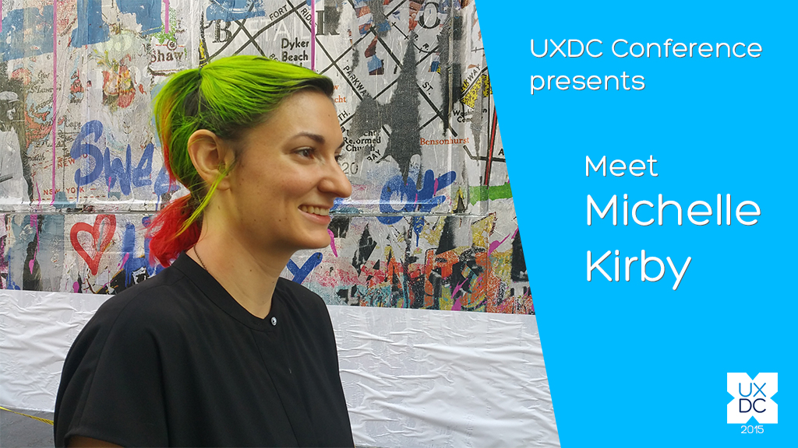
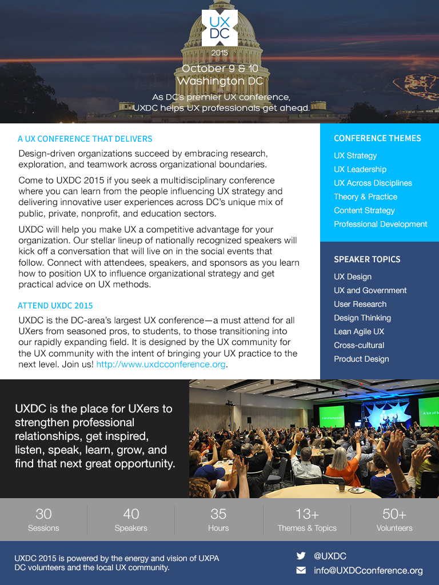

UXDC Conference
Visual Designer
UXDC 2015 is a multidisciplinary conference in Washington, DC were students, professionals and practitioners can learn from people influencing UX strategy and delivery innovative user experiences across DC's unique mix of public, private, nonprofit, and education sectors. It is designed by the UX community for the UX community with the intent of bring UX practice to the next level. For this conference, I worked on logo assets, digital press kit, and presentation slies.

Logo

Presentation Slides

Blog
